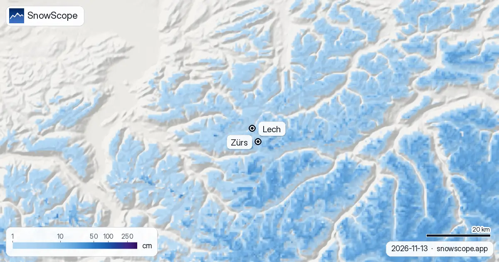

Lech am Arlberg Schneebericht: heute 6 cm, oben diese Woche 42 bis 91 cm möglich (13. November 2026)
Lech gilt als einer der schneereichsten Orte der Alpen, und unsere eigene Schneehistorie bestätigt das. Heute ist der Schneebericht allerdings bescheiden: rund 6 cm am höchsten Punkt des Skigebiets (2436 m), etwa 6 cm an der Mittelstation (1933 m) und aperer Boden in Lech selbst auf 1430 m. Die Geschichte ist die kommende Woche, und da gehen die Prognosen weit auseinander: Wir sehen oben 42 cm, andere bis zu 91 cm.
Die Live-Schneeprognose für Lech Zürs am Arlberg in der SnowScope-AppSchneehöhen, Pulverschnee-Alarme und 3D-Karte, gratis.
Heute: eine weiße Haut, keine Unterlage
Oben fielen in den letzten sieben Tagen 17 cm Neuschnee, 6 cm davon in den letzten 24 Stunden, und rund 6 cm liegen noch. Die Mittelstation bekam in der Woche nur 2 cm, hält aber eine ähnlich dünne Schicht von früheren Schneefällen. Im Ort liegt noch nichts. Vom Tal aus sehen die Hänge winterlich aus, zum Skifahren reicht es nicht.

Die Woche: ein Sturm unbekannter Größe
Für die nächsten sieben Tage gibt unsere Prognose 42 cm oben, 34 cm an der Mittelstation und 27 cm auf Ortshöhe, etwa 5 cm oben in den ersten 24 Stunden. Die anderen Prognosen, mit denen wir vergleichen, liegen alle höher: 52 bis 91 cm oben, 49 bis 132 cm an der Mittelstation und 21 bis 77 cm auf Ortshöhe. Wenn alle anderen Zahlen über unserer liegen, heißt das ehrlich gelesen: Ein echter Sturm kommt, und unser Wert ist das untere Ende.
Das Zweite, worauf man achten sollte, ist die Schneefallgrenze. Sie liegt um 1400 m, genau auf der Höhe von Lech. Im Ort ist also Regen und Schnee gemischt zu erwarten; verlässlich wird der Schnee etwas weiter oben und in Zürs, das über Lech an der Passstraße liegt.
Lech gegen St. Anton: die schneereiche Seite
Lech und St. Anton teilen sich den Arlberg, doch unsere 46 vergangenen Winter (1980-81 bis 2025-26) geben Lech mehr Schnee. Der höchste Punkt des Skigebiets von Lech liegt auf 2436 m, tiefer als die 2642 m von St. Anton, und doch erreicht ein mittlerer Winter dort 338 cm gegenüber 298 cm. An der Mittelstation, auf fast gleicher Höhe (1933 m gegenüber 1962 m), sind es 219 cm gegenüber 194 cm. Lech bekommt die feuchte Luft aus Nordwest als Erstes ab, und das sieht man.
Wie ein üblicher Winter in Lech aussieht
Ein üblicher November hält 7 cm im Ort, 23 cm an der Mittelstation und 41 cm oben. Der Dezember steigt auf 28, 70 und 109 cm, der Januar auf 49, 111 und 161 cm. An der Mittelstation haben 18 Wochen des Winters in 9 von 10 Wintern 50 cm oder mehr, oben 25 Wochen, und selbst der Ort hat in der Hälfte der Winter 7 solche Wochen. Am tiefsten ist der Schnee oben meist im März und April (262 und 270 cm).
Die Höchststände sind gesunken, an der Mittelstation von 240 cm in den ersten 15 unserer Winter auf 199 cm in den letzten 15, oben von 351 auf 323 cm. Der letzte Winter erreichte 62, 181 und 293 cm. Das kartierte Gebiet von Lech und Zürs zählt 120 km Pisten und 32 Lifte.
Tipps für Skifahrer
- Die Prognose dieser Woche als Spanne lesen: mit unseren 42 cm oben planen und auf viel mehr gefasst sein.
- In Lech mit Regen und Schnee gemischt rechnen; auf der Flexenstraße hinauf nach Zürs sind Winterreifen und Ketten Pflicht, sobald der Schnee kommt.
- Ein großer erster Sturm auf dünner Unterlage ist eine klassische Lawinensituation: vor jedem Schritt abseits der Piste den Lawinenbericht Vorarlberg lesen.
Weitere Karten (externe Seiten)
Quellen und Nachweise
- Lech Zürs am Arlberg, offizielle Website (Lifte, Öffnungstermine, Schneebericht) www.lechzuers.com/
- Lawinenwarndienst Vorarlberg, Lawinenbericht lawinen.report/
Zu diesen Zahlen
Schneewerte: das SnowScope-Schneemodell, Lauf vom 12. November 2026 für den 13. November, auf drei Höhen des Skigebiets (eine Schätzung für das Gebiet, keine Messungen des Skigebiets), und unsere Schneehistorie, 46 vergangene Winter (1980-81 bis 2025-26), höhenkorrigiert, für Lech Zürs und St. Anton. Spanne und Schneefallgrenze vergleichen andere Wettervorhersagen auf denselben Höhen. Pistenlänge und Liftzahl: OpenSkiMap-Kartierung. Prognosen ändern sich: vor der Abfahrt auf die Karte schauen.
Offizielle Lawinenlageberichte: Lawinenwarndienst Vorarlberg
Diesen Bericht zitieren
Für Forschung, Lehre oder Presse: Zahlen und Grafiken sind unter CC BY 4.0 mit dieser Quellenangabe frei nutzbar.
SnowScope (2026), Lech am Arlberg Schneebericht: heute 6 cm, oben diese Woche 42 bis 91 cm möglich (13. November 2026), https://snowscope.app/blog/de/2026/11/lech-am-arlberg-snow-report-13-november-2026.html, abgerufen am 2026-11-13
SnowScope (Atlas Labs). (2026, November 13). Lech am Arlberg Schneebericht: heute 6 cm, oben diese Woche 42 bis 91 cm möglich (13. November 2026). SnowScope snow reports. https://snowscope.app/blog/de/2026/11/lech-am-arlberg-snow-report-13-november-2026.html
BibTeX
@misc{snowscope2026lechamarlbergsnowreport1,
author = {{SnowScope (Atlas Labs)}},
title = {Lech am Arlberg Schneebericht: heute 6 cm, oben diese Woche 42 bis 91 cm möglich (13. November 2026)},
year = {2026},
month = nov,
howpublished = {\url{https://snowscope.app/blog/de/2026/11/lech-am-arlberg-snow-report-13-november-2026.html}},
note = {Published 2026-11-13 13:50 UTC; accessed 2026-11-13}
}· CC BY 4.0 · Methoden, Daten und Werkzeuge →
Lech Zürs am Arlberg: Schnee und Temperatur nach Höhe, dieser Winter vs letzter (Werkzeuge) →
Lech Zürs am Arlberg folgen
Gratis: eine Nachricht, wenn Neuschnee kommt, und jeden Morgen die Vorhersage.
Weitere Schneeberichte

Schnee im Dezember hängt vor allem von der Höhe ab. 46 vergangene Winter in 676 Alpen-Skigebieten zeigen, wie viel Schnee am 1., 15. und 22. Dezember zu erwarten ist, von unter 1.200 m bis über 2.400 m.

Wo der Dezember 2026 in den Dolomiten von Gröden bis Cortina schneereicher oder schneeärmer aussieht: die europäische Saisonprognose, unsere Karte und die Chancen auf weiße Weihnachten.

Schnee heute in Cortina, die europäische Saisonprognose für Dezember und unsere Chancen auf weiße Weihnachten in den östlichen Dolomiten.